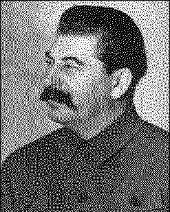

J. V.
|  |
The present English translation of J. V. Stalin's Marxism and Problems of Linguistics is a reprint of the text given in the English pamphlet by the same name, published in Moscow, 1954. Changes have been made according to other English translations. The notes at the end of the book are based on those given in the Chinese edition published by the People's Publishing House, Peking, October 1971.
C O N T E N T S
|
3 | |
|
33 | |
|
41 | |
|
|
page 3
A group of younger comrades have asked me to give my opinion in the press on problems relating to linguistics, particularly in reference to Marxism in linguistics. I am not a linguistic expert and, of course, cannot fully satisfy the request of the comrades. As to Marxism in linguistics, as in other social sciences, this is something directly in my field. I have therefore consented to answer a number of questions put by the comrades.
QUESTION. Is it true that language is a superstructure on the base?
ANSWER. No, it is not true.
The base is the economic structure of society at the given stage of its development. The superstructure is the political, legal, religious, artistic, philosophical views of society and the political, legal and other institutions corresponding to them.
Every base has its own corresponding superstructure. The base of the feudal system has its superstructure, its political, legal and other views, and the corresponding institutions; the capitalist base has its own superstructure, so has the socialist
page 4
base. If the base changes or is eliminated, then, following this, its superstructure changes or is eliminated; if a new base arises, then, following this, a superstructure arises corresponding to it.
In this respect language radically differs from the superstructure. Take, for example, Russian society and the Russian language. In the course of the past thirty years the old, capitalist base has been eliminated in Russia and a new, socialist base has been built. Correspondingly, the superstructure on the capitalist base has been eliminated and a new superstructure created corresponding to the socialist base. The old political, legal and other institutions, consequently, have been supplanted by new, socialist institutions. But in spite of this the Russian language has remained basically what it was before the October Revolution.
What has changed in the Russian language in this period? To a certain extent the vocabulary of the Russian language has changed, in the sense that it has been replenished with a considerable number of new words and expressions, which have arisen in connection with the rise of the new socialist production, the appearance of a new state, a new socialist culture, new social relations and morals, and, lastly, in connection with the development of technology and science; a number of words and expressions have changed their meaning, have acquired a new signification; a number of obsolete words have dropped out of the vocabulary. As to the basic stock of words and the grammatical system of the Russian language, which constitute the foundation of a language, they, after the elimination of the capitalist base, far from having been eliminated and supplanted by a new basic word stock and a new grammatical system of the language, have been preserved in their entirety and have not undergone any serious changes --
page 5
they have been preserved precisely as the foundation of the modern Russian language.
Further, the superstructure is a product of the base, but this by no means implies that it merely reflects the base, that it is passive, neutral, indifferent to the fate of its base, to the fate of the classes, to the character of the system. On the contrary, having come into being, it becomes an exceedingly active force, actively assisting its base to take shape and consolidate itself, and doing its utmost to help the new system to finish off and eliminate the old base and the old classes.
It cannot be otherwise. The superstructure is created by the base precisely in order to serve it, to actively help it to take shape and consolidate itself, to actively fight for the elimination of the old, moribund base together with its old superstructure. The superstructure has only to renounce this role of auxiliary, it has only to pass from a position of active defence of its base to one of indifference towards it, to adopt an equal attitude to all classes, and it loses its virtue and ceases to be a superstructure.
In this respect language radically differs from the superstructure. Language is not a product of one or another base, old or new, within the given society, but of the whole course of the history of the society and of the history of the bases for many centuries. It was created not by some one class, but by the entire society, by all the classes of the society, by the efforts of hundreds of generations. It was created for the satisfaction of the needs not of one particular class, but of the entire society, of all the classes of the society. Precisely for this reason it was created as a single language for the society, common to all members of that society, as the common language of the whole people. Hence the functional role of language, as a means of intercourse between people, con-
page 6
sists not in serving one class to the detriment of other classes, but in equally serving the entire society, all the classes of society. This in fact explains why a language may equally serve both the old, moribund system and the new, rising system; both the old base and the new base; both the exploiters and the exploited.
It is no secret to anyone that the Russian language served Russian capitalism and Russian bourgeois culture before the October Revolution just as well as it now serves the socialist system and socialist culture of Russian society.
The same must be said of the Ukrainian, Byelorussian, Uzbek, Kazakh, Georgian, Armenian, Estonian, Latvian, Lithuanian, Moldavian, Tatar, Azerbaijanian, Bashkirian, Turkmenian and other languages of the Soviet nations; they served the old, bourgeois system of these nations just as well as they serve the new, socialist system.
It cannot be otherwise. Language exists, language has been created precisely in order to serve society as a whole, as a means of intercourse between people, in order to be common to the members of society and constitute the single language of society, serving members of society equally, irrespective of their class status. A language has only to depart from this position of being a language common to the whole people, it has only to give preference and support to some one social group to the detriment of other social groups of the society, and it loses its virtue, ceases to be a means of intercourse between the people of the society, and becomes the jargon of some social group, degenerates and is doomed to disappear.
In this respect, while it differs in principle from the superstructure, language does not differ from instruments of production, from machines, let us say, which are as indifferent
page 7
to classes as is language and may, like it, equally serve a capitalist system and a socialist system.
Further, the superstructure is the product of one epoch, the epoch in which the given economic base exists and operates. The superstructure is therefore short-lived; it is eliminated and disappears with the elimination and disappearance of the given base.
Language, on the contrary, is the product of a whole number of epochs, in the course of which it takes shape, is enriched, develops and is smoothened. A language therefore lives immeasurably longer than any base or any superstructure. This in fact explains why the rise and elimination not only of one base and its superstructure, but of several bases and their corresponding superstructures, have not led in history to the elimination of a given language, to the elimination of its structure and the rise of a new language with a new stock of words and a new grammatical system.
It is more than a hundred years since Pushkin died. In this period the feudal system and the capitalist system were eliminated in Russia, and a third, a socialist system has arisen. Hence two bases, with their superstructures, were eliminated, and a new, socialist base has arisen, with its new superstructure. Yet, if we take the Russian language, for example, it has not in this long span of time undergone any fundamental change, and the modern Russian language differs very little in structure from the language of Pushkin.
What has changed in the Russian language in this period? The Russian vocabulary has in this period been greatly replenished; a large number of obsolete words have dropped out of the vocabulary; the meaning of a great many words has changed; the grammatical system of the language has improved. As to the structure of Pushkin's language, with its
page 8
grammatical system and its basic stock of words, in all essentials it has remained as the basis of modern Russian.
And this is quite understandable. Indeed, what necessity is there, after every revolution, for the existing structure of the language, its grammatical system and basic stock of words to be destroyed and supplanted by new ones, as is usually the case with the superstructure? What object would there be in calling "water," "earth," "mountain," "forest," "fish," "man," "to walk," "to do," "to produce," "to trade," etc., not water, earth, mountain, etc., but something else? What object would there be in having the modification of words in a language and the combination of words in sentences follow not the existing grammar, but some entirely different grammar? What would the revolution gain from such an upheaval in language? History in general never does anything of any importance without some special necessity for it. What, one asks, can be the necessity for such a linguistic revolution, if it has been demonstrated that the existing language and its structure are fundamentally quite suited to the needs of the new system? The old superstructure can and should be destroyed and replaced by a new one in the course of a few years, in order to give free scope for the development of the productive forces of society; but how can an existing language be destroyed and a new one built in its place in the course of a few years without causing anarchy in social life and without creating the threat of the disintegration of society? Who but a Don Quixote could set himself such a task?
Lastly, one other radical distinction between the superstructure and language. The superstructure is not directly connected with production, with man's productive activity. It is connected with production only indirectly, through the economy, through the base. The superstructure therefore reflects
page 9
changes in the level of development of the productive forces not immediately and not directly, but only after changes in the base, through the prism of the changes wrought in the base by the changes in production. This means that the sphere of action of the superstructure is narrow and restricted.
Language, on the contrary, is connected with man's productive activity directly, and not only with man's productive activity, but with all his other activity in all his spheres of work, from production to the base, and from the base to the superstructure. For this reason language reflects changes in production immediately and directly, without waiting for changes in the base. For this reason the sphere of action of language, which embraces all helds of man's activity, is far broader and more comprehensive than the sphere of action of the superstructure. More, it is practically unlimited.
It is this that primarily explains why language, or rather its vocabulary, is in a state of almost constant change. The continuous development of industry and agriculture, of trade and transport, of technology and science, demands that language should replenish its vocabulary with new words and expressions needed for their functioning. And language, directly reflecting these needs, does replenish its vocabulary with new words, and perfects its grammatical system.
Hence:
a ) A Marxist cannot regard language as a superstructure on the base;
b ) To confuse language and superstructure is to commit a serious error.
QUESTION. Is it true that language always was and is class language, that there is no such thing as language which is the
page 10
single and common language of a society, a non-class language common to the whole people?
ANSWER. No, it is not true.
It is not difficult to understand that in a society which has no classes there can be no such thing as a class language. There were no classes in the primitive communal clan system, and consequently there could be no class language -- the language was then the single and common language of the whole community. The objection that the concept class should be taken as covering every human community, including the primitive communal community, is not an objection but a playing with words that is not worth refuting.
As to the subsequent development from clan languages to tribal languages, from tribal languages to the languages of nationalities, and from the languages of nationalities to national languages -- everywhere and at all stages of development, language, as a means of intercourse between the people of a society, was the common and single language of that society, serving its members equally, irrespective of their social status.
I am not referring here to the empires of the slave and mediaeval periods, the empires of Cyrus or Alexander the Great, let us say, or of Caesar or Charles the Great, which had no economic foundations of their own and were transient and unstable military and administrative associations. Not only did these empires not have, they could not have had a single language common to the whole empire and under stood by all the members of the empire. They were conglomerations of tribes and nationalities, each of which lived its own life and had its own language. Consequently, it is not these or similar empires I have in mind, but the tribes
page 11
and nationalities composing them, which had their own economic foundations and their own languages, evolved in the distant past. History tells us that the languages of these tribes and nationalities were not class languages, but languages common to the whole of a tribe or nationality, and understood by all its people.
Side by side with this, there were, of course, dialects, local vernaculars, but they were dominated by and subordinated to the single and common language of the tribe or nationality.
Later, with the appearance of capitalism, the elimination of feudal division and the formation of national markets, nationalities developed into nations, and the languages of nationalities into national languages. History shows that national languages are not class, but common languages, common to all the members of each nation and constituting the single language of that nation.
It has been said above that language, as a means of intercourse between the people of a society, serves all classes of society equally, and in this respect displays what may be called an indifference to classes. But people, the various social groups, the classes, are far from being indifferent to language. They strive to utilize the language in their own interests, to impose their own special lingo, their own special terms, their own special expressions upon it. The upper strata of the propertied classes, who have divorced themselves from and detest the people -- the aristocratic nobility, the upper strata of the bourgeoisie -- particularly distinguish themselves in this respect. "Class" dialects, jargons, high-society "languages" are created. These dialects and jargons are often incorrectly referred to in literature as languages -- the "aristocratic language" or the "bourgeois language" in contradistinction to the "proletarian language" or the "peasant
page 12
language." For this reason, strange as it may seem, some of our comrades have come to the conclusion that national language is a fiction, and that only class languages exist in reality.
There is nothing, I think, more erroneous than this conclusion. Can these dialects and jargons be regarded as languages? Certainly not. They cannot, firstly, because these dialects and jargons have no grammatical systems or basic word stocks of their own -- they borrow them from the national language. They cannot, secondly, because these dialects and jargons are confined to a narrow sphere, are current only among the upper strata of a given class and are entirely unsuitable as a means of human intercourse for society as a whole. What, then, have they? They have a collection of specific words reflecting the specific tastes of the aristocracy or the upper strata of the bourgeoisie; a certain number of expressions and turns of phrase distinguished by refinement and gallantry and free of the "coarse" expressions and turns of phrase of the national language; lastly, a certain number of foreign words. But all the fundamentals, that is, the overwhelming majority of the words and the grammatical system, are borrowed from the common, national language. Dialects and jargons are therefore offshoots of the common national language, devoid of all linguistic independence and doomed to stagnation. To believe that dialects and jargons can develop into independent languages capable of ousting and supplanting the national language means losing one's sense of historical perspective and abandoning the Marxist position.
References are made to Marx, and the passage from his article St. Max is quoted which says that the bourgeois have "their own language," that this language "is a product of the
page 13
bourgeoisie"[2] that it is permeated with the spirit of mercantilism and huckstering. Certain comrades cite this passage with the idea of proving that Marx believed in the "class character" of language and denied the existence of a single national language. If these comrades were impartial, they should have cited another passage from this same article St. Max, where Marx, touching on the ways single national languages arose, speaks of "the concentration of dialects into a single national language resulting from economic and political concentration."[3]
Marx, consequently, did recognize the necessity of a single national language, as a higher form, to which dialects, as lower forms, are subordinate.
What, then, can this bourgeois language be which Marx says "is a product of the bourgeoisie"? Did Marx consider it as much a language as the national language, with a specific linguistic structure of its own? Could he have considered it such a language? Of course, not. Marx merely wanted to say that the bourgeois had polluted the single national language with their hucksters' lingo, that the bourgeois, in other words, have their hucksters' jargon.
It thus appears that these comrades have misrepresented Marx. And they misrepresented him because they quoted Marx not like Marxists but like dogmatists, without delving into the essence of the matter.
References are made to Engels, and the words from his The Condition of the Working Class in England are cited where he says that in Britain ". . . the working class has gradually become a race wholly apart from the English bourgeoisie," that "the workers speak other dialects, have other thoughts and ideals, other customs and moral principles, a different religion and other politics than those of the bour-
page 14
geoisie."[4] Certain comrades conclude from this passage that Engels denied the necessity of a common, national language, that he believed, consequently, in the "class character" of language. True, Engels speaks here of dialects, not languages, fully realizing that, being an offshoot of the national language, a dialect cannot supplant the national language. But apparently, these comrades regard the existence of a difference between a language and a dialect with no particular enthusiasm. . . .
It is obvious that the quotation is inappropriate, because Engels here speaks not of "class languages" but chiefly of class thoughts, ideals, customs, moral principles, religion, politics. It is perfectly true that the thoughts, ideals, customs, moral principles, religion and politics of bourgeois and proletarians are directly antithetical. But what has this to do with national language, or the "class character" of language? Can the existence of class antagonisms in society serve as an argument in favour of the "class character" of language, or against the necessity of a single national language? Marxism says that a common language is one of the cardinal earmarks of a nation, although knowing very well that there are class antagonisms within the nation. Do the comrades referred to recognize this Marxist thesis?
References are made to Lafargue,[5] and it is said that in his pamphlet The French Language Before and After the Revolution he recognizes the "class character" of language and denies the necessity of a national language common to the whole people. That is not true. Lafargue does indeed speak of a "noble" or "aristocratic language" and of the "jargons" of various strata of society. But these comrades forget that Lafargue, who was not interested in the difference between languages and jargons and referred to dialects now as "artifi-
page 15
cial languages," now as "jargons," definitely says in this pamphlet that "the artificial language which distinguished the aristocracy . . . arose out of the language common to the whole people, which was spoken both by bourgeois and artisan, by town and country."
Consequently, Lafargue recognizes the existence and necessity of a common language of the whole people, and fully realizes that the "aristocratic language" and other dialects and jargons are subordinate to and dependent on the language common to the whole people.
It follows that the reference to Lafargue is wide of the mark.
References are made to the fact that at one time in England the feudal lords spoke "for centuries" in French, while the English people spoke English, and this is alleged to be an argument in favour of the "class character" of language and against the necessity of a language common to the whole people. But this is not an argument, it is rather an anecdote. Firstly, not all the feudal lords spoke French at that time, but only a small upper stratum of English feudal lords attached to the court and at county seats. Secondly, it was not some "class language" they spoke, but the ordinary language common to all the French people. Thirdly, we know that in the course of time this French language fad disappeared without a trace, yielding place to the English language common to the whole people. Do these comrades think that the English feudal lords "for centuries" held intercourse with the English people through interpreters, that they did not use the English language, that there was no language common to all the English at that time, and that the French language in England was then anything more than the language of high society, current only in the restricted circle of the upper English
page 16
aristocracy? How can one possibly deny the existence and the necessity of a language common to the whole people on the basis of anecdotic "arguments" like these?
There was a time when Russian aristocrats at the tsar's court and in high society also made a fad of the French language. They prided themselves on the fact that when they spoke Russian they often lapsed into French, that they could only speak Russian with a French accent. Does this mean that there was no Russian language common to the whole people at that time in Russia, that a language common to the whole people was a fiction, and "class languages" a reality?
Our comrades are here committing at least two mistakes.
The first mistake is that they confuse language with superstructure. They think that since the superstructure has a class character, language too must be a class language, and not a language common to the whole people. But I have already said that language and superstructure are two different concepts, and that a Marxist must not confuse them.
The second mistake of these comrades is that they conceive the opposition of interests of the bourgeoisie and the proletariat, the fierce class struggle between them, as meaning the disintegration of society, as a break of all ties between the hostile classes. They believe that, since society has disintegrated and there is no longer a single society, but only classes, a single language of society, a national language, is unnecessary. If society has disintegrated and there is no longer a language common to the whole people, a national language, what re mains? There remain classes and "class languages." Naturally, every "class language" will have its "class" grammar -- a "proletarian" grammar or a "bourgeois" grammar. True, such grammars do not exist anywhere. But that does not
page 17
worry these comrades: they believe that such grammars will appear in due course.
At one time there were "Marxists" in our country who asserted that the railways left to us after the October Revolution were bourgeois railways, that it would be unseemly for us Marxists to use them, that they should be torn up and new, "proletarian" railways built. For this they were nicknamed "troglodytes".
It goes without saying that such a primitive-anarchist view of society, of classes, of language has nothing in common with Marxism. But it undoubtedly exists and continues to prevail in the minds of certain of our muddled comrades.
It is of course wrong to say that, because of the existence of a fierce class struggle, society has split up into classes which are no longer economically connected with one another in one society. On the contrary, as long as capitalism exists, the bourgeois and the proletarians will be bound together by every economic thread as parts of a single capitalist society. The bourgeois cannot live and enrich themselves unless they have wage-labourers at their command; the proletarians cannot survive unless they hire themselves to the capitalists. If all economic ties between them were to cease, it would mean the cessation of all production, and the cessation of all production would mean the doom of society, the doom of the classes themselves. Naturally, no class wants to incur self-destruction. Consequently, however sharp the class struggle may be, it cannot lead to the disintegration of society. Only ignorance of Marxism and complete failure to understand the nature of language could have suggested to some of our comrades the fairy-tale about the disintegration of society, about "class" languages, and "class" grammars.
page 18
Reference is further made to Lenin, and it is pointed out that Lenin recognized the existence of two cultures under capitalism -- bourgeois and proletarian -- and that the slogan of national culture under capitalism is a nationalist slogan. All this is true and Lenin is absolutely right here. But what has this to do with the "class character" of language? When these comrades refer to what Lenin said about two cultures under capitalism, it is evidently with the idea of suggesting to the reader that the existence of two cultures, bourgeois and proletarian, in society means that there must also be two languages, inasmuch as language is linked with culture -- and, consequently, that Lenin denies the necessity of a single national language, and, consequently, that Lenin believes in "class" languages. The mistake these comrades make here is that they identify and confuse language with culture. But culture and language are two different things. Culture may be bourgeois or socialist, but language, as a means of intercourse, is always a language common to the whole people and can serve both bourgeois and socialist culture. Is it not a fact that the Russian, the Ukrainian, the Uzbek languages are now serving the socialist culture of these nations just as well as they served their bourgeois cultures before the October Revolution? Consequently, these comrades are profoundly mistaken when they assert that the existence of two different cultures leads to the formation of two different languages and to the negation of the necessity of a single language.
When Lenin spoke of two cultures, he proceeded precisely from the thesis that the existence of two cultures cannot lead to the negation of a single language and to the formation of two languages, that there must be a single language. When the Bundists[6] accused Lenin of denying the necessity of a national language and of regarding culture as "non-national,"
page 19
Lenin, as we know, vigorously protested and declared that he was fighting against bourgeois culture, and not against national languages, the necessity of which he regarded as indisputable. It is strange that some of our comrades should be trailing in the footsteps of the Bundists.
As to a single language, the necessity of which Lenin is alleged to deny, it would be well to pay heed to the following words of Lenin:
"Language is the most important means of human intercourse. Unity of language and its unimpeded development form one of the most important conditions for genuinely free and extensive commercial intercourse appropriate to modern capitalism, for a free and broad grouping of the population in all its separate classes."[7]
It follows that our highly respected comrades have misrepresented the views of Lenin.
Reference, lastly, is made to Stalin. The passage from Stalin is quoted which says that "the bourgeoisie and its nationalist parties were and remain in this period the chief directing force of such nations."[8] This is all true. The bourgeoisie and its nationalist party really do direct bourgeois culture, just as the proletariat and its internationalist party direct proletarian culture. But what has this to do with the "class character" of language? Do not these comrades know that national language is a form of national culture, that a national language may serve both bourgeois and socialist culture? Are our comrades unaware of the well-known formula of the Marxists that the present Russian, Ukrainian, Byelorussian and other cultures are socialist in content and national in form, i.e., in language? Do they agree with this Marxist formula?
page 20
The mistake our comrades commit here is that they do not see the difference between culture and language, and do not understand that culture changes in content with every new period in the development of society, whereas language remains basically the same through a number of periods, equally serving both the new culture and the old.
Hence:
a ) Language, as a means of intercourse, always was and remains the single language of a society, common to all its members;
b ) The existence of dialects and jargons does not negate but confirms the existence of a language common to the whole of the given people, of which they are offshoots and to which they are subordinate;
c ) The "class character" of language formula is erroneous and non-Marxist.
QUESTION. What are the characteristic features of language?
ANSWER. Language is one of those social phenomena which operate throughout the existence of a society. It arises and develops with the rise and development of a society. It dies when the society dies. Apart from society there is no language. Accordingly, language and its laws of development can be understood only if studied in inseparable connection with the history of society, with the history of the people to whom the language under study belongs, and who are its creators and repositories.
Language is a medium, an instrument with the help of which people communicate with one another, exchange thoughts and understand each other. Being directly con nected with thinking, language registers and fixes in words,
page 21
and in words combined into sentences, the results of the process of thinking and achievements of man's cognitive activity, and thus makes possible the exchange of thoughts in human society.
Exchange of thoughts is a constant and vital necessity, for without it, it is impossible to co-ordinate the joint actions of people in the struggle against the forces of nature, in the struggle to produce the necessary material values; without it, it is impossible to ensure the success of society's productive activity, and, hence, the very existence of social production becomes impossible. Consequently, without a language understood by a society and common to all its members, that society must cease to produce, must disintegrate and cease to exist as a society. In this sense, language, while it is a medium of intercourse, is at the same time an instrument of struggle and dsvelopment of society.
As we know, all the words in a language taken together constitute what is known as its vocabulary. The chief thing in the vocabulary of a language is its basic stock of words, which includes also all the root words, as its kernel. It is far less extensive than the language's vocabulary, but it persists for a very long time, for centuries, and provides the language with a basis for the formation of new words. The vocabulary reflects the state of the language: the richer and more diversified the vocabulary, the richer and more developed the language.
However, by itself, the vocabulary does not constitute the language -- it is rather the building material of the language. Just as in construction work the building materials do not constitute the building, although the latter cannot be constructed without them, so too the vocabulary of a language does not constitute the language itself, although no language
page 22
is conceivable without it. But the vocabulary of a language assumes tremendous importance when it comes under the control of grammar, which dehnes the rules governing the modification of words and the combination of words into sentences, and thus makes the language a coherent and significant function. Grammar (morphology, syntax) is the collection of rules governing the modification of words and their combination into sentences. It is therefore thanks to grammar that it becomes possible for language to invest man's thoughts in a material linguistic integument.
The distinguishing feature of grammar is that it gives rules for the modification of words not in reference to concrete words, but to words in general, not taken concretely; that it gives rules for the formation of sentences not in reference to particular concrete sentences -- with, let us say, a concrete subject, a concrete predicate, etc. -- but to all sentences in general, irrespective of the concrete form of any sentence in particular. Hence, abstracting itself, as regards both words and sentences, from the particular and concrete, grammar takes that which is common and basic in the modification of words and their combination into sentences and builds it into grammatical rules, grammatical laws. Grammar is the outcome of a process of abstraction performed by the human mind over a long period of time; it is an indication of the tremendous achievement of thought.
In this respect grammar resembles geometry, which in giving its laws abstracts itself from concrete objects, regarding objects as bodies devoid of concreteness, and defining the relations between them not as the concrete relations of concrete objects but as the relations of bodies in general, devoid of all concreteness.
page 23
Unlike the superstructure, which is connected with production not directly, but through the economy, language is directly connected with man's productive activity, as well as with all his other activity in all his spheres of work without exception. That is why the vocabulary of a language, being the most sensitive to change, is in a state of almost constant change and, unlike the superstructure, language does not have to wait until the base is eliminated, but makes changes in its vocabulary before the base is eliminated and irrespective of the state of the base.
However, the vocabulary of a language does not change in the way the superstructure does, that is, by abolishing the old and building something new, but by replenishing the existing vocabulary with new words which arise with changes in the social system, with the development of production, of culture, science, etc. Moreover, although a certain number of obsolete words usually drop out of the vocabulary of a language, a far larger number of new words are added. As to the basic word stock, it is preserved in all its fundamentals and is used as the basis for the vocabulary of the language.
This is quite understandable. There is no necessity to destroy the basic word stock when it can be effectively used through the course of several historical periods; not to speak of the fact that, it being impossible to create a new basic word stock in a short time, the destruction of the basic word stock accumulated in the course of centuries would result in paralysis of the language, in the complete disruption of intercourse between people.
The grammatical system of a language changes even more slowly than its basic word stock. Elaborated in the course of epochs, and having become part of the flesh and blood of the language, the grammatical system changes still more
page 24
slowly than the basic word stock. With the lapse of time it, of course, undergoes changes, becomes more perfected, improves its rules, makes them more specific and acquires new rules; but the fundamentals of the grammatical system are preserved for a very long time, since, as history shows, they are able to serve society effectively through a succession of epochs.
Hence, grammatical system and basic word stock constitute the foundation of language, the essence of its specific character.
History shows that languages possess great stability and a tremendous power of resistance to forcible assimilation. Some historians, instead of explaining this phenomenon, confine themselves to expressing their surprise at it. But there is no reason for surprise whatsoever. Languages owe their stability to the stability of their grammatical systems and basic word stocks. The Turkish assimilators strove for hundreds of years to mutilate, shatter and destroy the languages of the Balkan peoples. During this period the vocabulary of the Balkan languages underwent considerable change; quite a few Turkish words and expressions were absorbed; there were "convergencies" and "divergencies." Nevertheless, the Balkan languages held their own and survived. Why? Because their grammatical systems and basic word stocks were in the main preserved.
It follows from all this that a language, its structure, cannot be regarded as the product of some one epoch. The structure of a language, its grammatical system and basic word stock, is the product of a number of epochs.
We may assume that the rudiments of modern language already existed in hoary antiquity, before the epoch of slavery. It was a rather simple language, with a very meagre stock
page 25
of words, but with a grammatical system of its own -- true, a primitive one, but a grammatical system nonetheless.
The further development of production, the appearance of classes, the introduction of writing, the rise of the state which needed a more or less well-regulated correspondence for its administration, the development of trade, which needed a well-regulated correspondence still more, the appearance of the printing press, the development of literature -- all this caused big changes in the development of language. During this time, tribes and nationalities broke up and scattered, intermingled and intercrossed; later there arose national languages and states, revolutions took place, and old social systems were replaced by new ones. All this caused even greater changes in language and its development.
However, it would be a profound mistake to think that language developed in the way the superstructure developed -- by the destruction of that which existed and the building of something new. In point of fact, languages did not develop by the destruction of existing languages and the creation of new ones, but by extending and perfecting the basic elements of existing languages. And the transition of the language from one quality to another did not take the form of an explosion, of the destruction at one blow of the old and the creation of the new, but of the gradual and long-continued accumulation of the elements of the new quality, of the new linguistic structure, and the gradual dying away of the elements of the old quality.
It is said that the theory that languages develop by stages is a Marxist theory, since it recognizes the necessity of sudden explosions as a condition for the transition of a language from an old quality to a new. This is of course untrue, for it is difficult to find anything resembling Marxism in this theory.
page 26
And if the theory of stages really does recognize sudden explosions in the history of the development of languages, so much the worse for that theory. Marxism does not recognize sudden explosions in the development of languages, the sudden death of an existing language and the sudden erection of a new language. Lafargue was wrong when he spoke of a "sudden linguistic revolution which took place between 1789 and 1794" in France (see Lafargue's pamphlet The French Language Before and After the Revolution ). There was no linguistic revolution, let alone a sudden one, in France at that time. True enough, during that period the vocabulary of the French language was replenished with new words and expressions, a certain number of obsolete words dropped out of it, and the meaning of certain words changed -- but that was all. Changes of this nature, however, by no means determine the destiny of a language. The chief thing in a language is its grammatical system and basic word stock. But far from disappearing in the period of the French bourgeois revolution, the grammatical system and basic word stock of the French language were preserved without substantial change, and not only were they preserved, but they continue to exist in the French language of to-day. I need hardly say that five or six years is a ridiculously small period for the elimination of an existing language and the building of a new national language ("a sudden linguistic revolution"!) -- centuries are needed for this.
Marxism holds that the transition of a language from an old quality to a new does not take place by way of an explosion, of the destruction of an existing language and the creation of a new one, but by the gradual accumulation of the
page 27
elements of the new quality, and hence by the gradual dying away of the elements of the old quality.
It should be said in general for the benefit of comrades who have an infatuation for explosions that the law of transition from an old quality to a new by means of an explosion is inapplicable not only to the history of the development of languages; it is not always applicable to other social phenomena of a basis or superstructural character. It applies of necessity to a society divided into hostile classes. But it does not necessarily apply to a society which has no hostile classes. In a period of eight to ten years we effected a transition in the agriculture of our country from the bourgeois, individual-peasant system to the socialist, collective-farm system. This was a revolution which eliminated the old bourgeois economic system in the countryside and created a new, socialist system. But that revolution did not take place by means of an explosion, that is, by the overthrow of the existing government power and the creation of a new power, but by a gradual transition from the old bourgeois system in the countryside to a new system. And it was possible to do that because it was a revolution from above, because the revolution was accomplished on the initiative of the existing power with the support of the bulk of the peasantry.
It is said that the numerous instances of linguistic crossing in past history furnish reason to believe that when languages cross a new language is formed by means of an explosion, by a sudden transition from an old quality to a new. This is quite wrong.
Linguistic crossing cannot be regarded as the single impact of a decisive blow which produces its results within a few years. Linguistic crossing is a prolonged process which con-
page 28
tinues for hundreds of years. There can therefore be no question of explosion here.
Further, it would be quite wrong to think that the crossing of, say, two languages results in a new, third language which does not resemble either of the languages crossed and differs qualitatively from both of them. As a matter of fact one of the languages usually emerges victorious from the cross, retains its grammatical system and its basic word stock and continues to develop in accordance with its inherent laws of development, while the other language gradually loses its quality and gradually dies away.
Consequently, a cross does not result in some new, third language; one of the languages persists, retains its grammatical system and basic word stock and is able to develop in accordance with its inherent laws of development.
True, in the process the vocabulary of the victorious language is somewhat enriched from the vanquished language, but this strengthens rather than weakens it.
Such was the case, for instance, with the Russian language, with which, in the course of historical development, the languages of a number of other peoples crossed and which always emerged the victor.
Of course, in the process the vocabulary of the Russian language was enlarged at the expense of the vocabularies of the other languages, but far from weakening, this enriched and strengthened the Russian language.
As to the specific national individuality of the Russian language, it did not suffer in the slightest, because the Russian language preserved its grammatical system and basic word stock and continued to advance and perfect itself in accordance with its inherent laws of development.
page 29
There can be no doubt that the crossing theory has little or no value for Soviet linguistics. If it is true that the chief task of linguistics is to study the inherent laws of language development, it has to be admitted that the crossing theory does not even set itself this task, let alone accomplish it -- it simply does not notice it, or does not understand it.
QUESTION. Did Pravda act rightly in starting an open discussion on problems of linguistics?
ANSWER. Yes, it did.
Along what lines the problems of linguistics will be settled, will become clear at the conclusion of the discussion. But it may be said already that the discussion has been very useful.
It has brought out, in the first place, that in linguistic bodies both in the centre and in the republics a regime has prevailed which is alien to science and men of science. The slightest criticism of the state of affairs in Soviet linguistics, even the most timid attempt to criticize the so-called "new doctrine" in linguistics, was persecuted and suppressed by the leading linguistic circles. Valuable workers and researchers in linguistics were dismissed from their posts or demoted for being critical of N. Y. Marr's heritage or expressing the slightest disapproval of his teachings. Linguistic scholars were appointed to leading posts not on their merits, but because of their unqualified acceptance of N. Y. Marr's theories.
It is generally recognized that no science can develop and flourish without a battle of opinions, without freedom of criticism. But this generally recognized rule was ignored and flouted in the most unceremonious fashion. There arose a close group of infallible leaders, who, having secured them-
page 31
selves against any possible criticism, became a law unto themselves and did whatever they pleased.
To give one example: the so-called "Baku Course" (lectures delivered by N. Y. Marr in Baku), which the author himself had rejected and forbidden to be republished, was republished nevertheless by order of this leading caste (Comrade Meshchaninov calls them "disciples" of N. Y. Marr) and included without any reservations in the list of text-books recommended to students. This means that the students were deceived, a rejected "Course" being suggested to them as a sound text book. If I were not convinced of the integrity of Comrade Meshchaninov and the other linguistic leaders, I would say that such conduct is tantamount to sabotage.
How could this have happened? It happened because the Arakcheyev regime[9] established in linguistics cultivates irresponsibility and encourages such arbitrary actions.
The discussion has proved to be very useful first of all because it brought this Arakcheyev regime into the light of day and smashed it to smithereens.
But the usefulness of the discussion does not end there. It not only smashed the old regime in linguistics but also brought out the incredible confusion of ideas on cardinal questions of linguistics which prevails among the leading circles in this branch of science. Until the discussion began the "disciples" of N. Y. Marr kept silence and glossed over the unsatisfactory state of affairs in linguistics. But when the discussion started silence became impossible, and they were compelled to express their opinion in the press. And what did we find? It turned out that in N. Y. Marr's teachings there are a whole number of defects, errors, ill-defined problems and sketchy propositions. Why, one asks, have
page 31
N. Y. Marr's "disciples" begun to talk about this only now, after the discussion opened? Why did they not see to it before? Why did they not speak about it in due time openly and honestly, as befits scientists?
Having admitted "some" errors of N. Y. Marr, his "disciples," it appears, think that Soviet linguistics can only be advanced on the basis of a "rectified" version of N. Y. Marr's theory, which they consider a Marxist one. No, save us from N. Y. Marr's "Marxism"! N. Y. Marr did indeed want to be, and endeavoured to be, a Marxist, but he failed to become one. He was nothing but a simplifier and vulgarizer of Marxism, similar to the "proletcultists" or the "Rappists."
N. Y. Marr introduced into linguistics the incorrect, non-Marxist formula that language is a superstructure, and got himself into a muddle and put linguistics into a muddle. Soviet linguistics cannot be advanced on the basis of an in correct formula.
N. Y. Marr introduced into linguistics another and also incorrect and non-Marxist formula, regarding the "class character" of language, and got himself into a muddle and put linguistics into a muddle. Soviet linguistics cannot be advanced on the basis of an incorrect formula which is contrary to the whole course of the history of peoples and languages.
N. Y. Marr introduced into linguistics an immodest, boastful, arrogant tone alien to Marxism and tending towards a bald and off-hand negation of everything done in linguistics prior to N. Y. Marr.
N.Y. Marr shrilly abused the comparative-historical method as "idealistic." Yet it must be said that, despite its serious shortcomings, the comparative-historical method is nevertheless better than N. Y. Marr's really idealistic four-element
page 32
analysis,[10] because the former gives a stimulus to work, to a study of languages, while the latter only gives a stimulus to loll in one's arm-chair and tell fortunes in the tea-cup of the celebrated four elements.
N. Y. Marr haughtily discountenanced every attempt to study groups (families) of languages on the grounds that it was a manifestation of the "proto-language" theory.[11] Yet it cannot be denied that the linguistic affinity of nations like the Slav nations, say, is beyond question, and that a study of the linguistic affinity of these nations might be of great value to linguistics in the study of the laws of language development. The "proto-language" theory, I need hardly say, has nothing to do with it.
To listen to N. Y. Marr, and especially to his "disciples," one might think that prior to N. Y. Marr there was no such thing as the science of language, that the science of language appeared with the "new doctrine" of N. Y. Marr. Marx and Engels were much more modest: they held that their dialectical materialism was a product of the development of the sciences, including philosophy, in earlier periods.
Thus, the discussion was useful also because it brought to light ideological shortcomings in Soviet linguistics.
I think that the sooner our linguistics rids itself of N. Y. Marr's errors, the sooner will it be possible to extricate it from its present crisis.
Elimination of the Arakcheyev regime in linguistics, rejection of N. Y. Marr's errors, and the introduction of Marxism into linguistics -- that, in my opinion, is the way in which Soviet linguistics could be put on a sound basis.
page 33
Reply to Comrade E. Krasheninnikova
I am answering your questions.
1. QUESTION. Your article convincingly shows that language is neither the base nor the superstructure. Would it be right to regard language as a phenomenon characteristic of both the base and the superstructure, or would it be more correct to regard language as an intermediate phenomenon?
ANSWER. Of course, characteristic of language, as a social phenomenon, is that common feature which is inherent in all social phenomena, including the base and the superstructure, namely: it serves society just as society is served by all other social phenomena, including the base and the superstructure. But this, properly speaking, exhausts that common feature which is inherent in all social phenomena. Beyond this, important distinctions begin between social phenomena.
page 33
The point is that social phenomena have, in addition to this common feature, their own specific features which distinguish them from each other and which are of primary importance for science. The specific features of the base consist in that it serves society economically. The specific features of the superstructure consist in that it serves society by means of political, legal, aesthetic and other ideas and provides society with corresponding political, legal and other institutions. What then are the specific features of language, distinguishing it from other social phenomena? They consist in that language serves society as a means of intercourse between people, as a means for exchanging thoughts in society, as a means enabling people to understand one another and to co-ordinate joint work in all spheres of human activity, both in the sphere of production and in the sphere of economic relations, both in the sphere of politics and in the sphere of culture, both in social life and in everyday life. These specific features are characteristic only of language, and precisely because they are characteristic only of language, language is the object of study by an independent science -- linguistics. If there were no such specific features of language, linguistics would lose its right to independent existence.
In brief: language cannot be included either in the category of bases or in the category of superstructures.
Nor can it be included in the category of "intermediate" phenomena between the base and the superstructure, for such "intermediate" phenomena do not exist.
But perhaps language could be included in the category of the productive forces of society, in the category, say, of instruments of production? Indeed, there does exist a certain analogy between language and instruments of produc-
page 35
tion: instruments of production manifest, just as language does, a kind of indifference towards classes and can serve equally different classes of society, both old and new. Does this circumstance provide ground for including language in the category of instruments of production? No, it does not.
At one time, N. Y. Marr, seeing that his formula -- "language is a superstructure on the base" -- encountered objections, decided to "reshape" it and announced that "language is an instrument of production." Was N. Y. Marr right in including language in the category of instruments of production? No, he certainly was not.
The point is that the similarity between language and instruments of production ends with the analogy I have just mentioned. But, on the other hand, there is a radical difference between language and instruments of production. This difference lies in the fact that whereas instruments of production produce material wealth, language produces nothing or "produces" words only. To put it more plainly, people possessing instruments of production can produce material wealth, but those very same people, if they possess a language but not instruments of production, cannot produce material wealth. It is not difficult to see that were language capable of producing material wealth, wind-bags would be the richest men on earth.
2. QUESTION. Marx and Engels define language as "the immediate reality of thought," as "practical, . . . actual consciousness.''[12] "Ideas," Marx says, "do not exist divorced from language." In what measure, in your opinion, should linguistics occupy itself with the semantic aspect of language,
page 36
semantics, historical semasiology, and stylistics, or should form alone be the subject of linguistics?
ANSWER. Semantics (semasiology) is one of the important branches of linguistics. The semantic aspect of words and expressions is of serious importance in the study of language. Hence, semantics (semasiology) must be assured its due place in linguistics.
However, in working on problems of semantics and in utilizing its data, its significance must in no way be over estimated, and still less must it be abused. I have in mind certain philologists who, having an excessive passion for semantics, disregard language as "the immediate reality of thought" inseparably connected with thinking, divorce thinking from language and maintain that language is outliving its age and that it is possible to do without language.
Listen to what N. Y. Marr says:
"Language exists only inasmuch as it is expressed in sounds; the action of thinking occurs also without being expressed. . . . Language (spoken) has already begun to surrender its functions to the latest inventions which are unreservedly conquering space, while thinking is on the up-grade, departing from its unutilized accumulations in the past and its new acquisitions, and is to oust and fully replace language. The language of the future is thinking which will be developing in technique free of natural matter. No language, even the spoken language, which is all the same connected with the standards of nature, will be able to withstand it" (see Selected Works by N. Y. Marr).
If we interpret this "labour-magic" gibberish into simple human language, the conclusion may be drawn that:
a ) N. Y. Marr divorces thinking from language;
b ) N. Y. Marr considers that communication between people can be realized without language, with the help of thinking
page 37
itself, which is free of the "natural matter" of language, free of the "standards of nature";
c ) divorcing thinking from language and "having freed" it from the "natural matter" of language, N. Y. Marr lands into the swamp of idealism.
It is said that thoughts arise in the mind of man prior to their being expressed in speech, that they arise without linguistic material, without linguistic integument, in, so to say, a naked form. But that is absolutely wrong. Whatever thoughts arise in the human mind and at whatever moment, they can arise and exist only on the basis of the linguistic material, on the basis of language terms and phrases. Bare thoughts, free of the linguistic material, free of the "natural matter" of language, do not exist. "Language is the immediate reality of thought" (Marx ). The reality of thought is manifested in language. Only idealists can speak of thinking not being connected with "the natural matter" of language, of thinking without language.
In brief: over-estimation of semantics and abuse of it led N. Y. Marr to idealism.
Consequently, if semantics (semasiology) is safeguarded against exaggerations and abuses of the kind committed by N. Y. Marr and some of his "disciples," semantics can be of great benefit to linguistics.
3. QUESTION. You quite justly say that the ideas, concepts, customs and moral principles of the bourgeoisie and those of the proletariat are directly antithetical. The class character of these phenomena is certainly reflected in the semantic aspect of language (and sometimes in its form -- in the vocabulary -- as is correctly pointed out in your article). In analyzing concrete linguistic material and, in the first place,
page 38
the semantic aspect of language, can we speak of the class essence of the concepts expressed by language, particularly in those cases when language expresses not only the thought of man but also his attitude towards reality, where his class affinity manifests itself with especial clarity?
ANSWER. Putting it more briefly, you want to know whether classes influence language, whether they introduce into language their specific words and expressions, whether there are cases when people attach a different meaning to one and the same word or expression depending on their class affinity?
Yes, classes influence language, introduce into the language their own specific words and expressions and sometimes understand one and the same word or expression differently. There is no doubt about that.
However, it does not follow that specific words and expressions, as well as difference in semantics, can be of serious importance for the development of a single language common to the whole people, that they are capable of detracting from its significance or of changing its character.
Firstly, such specific words and expressions, as well as cases of difference in semantics, are so few in language that they hardly make up even one per cent of the entire linguistic material. Consequently, all the remaining overwhelming mass of words and expressions, as well as their semantics, are common to all classes of society.
Secondly, specific words and expressions with a class tinge are used in speech not according to rules of some sort of "class" grammar, which does not exist, but according to the grammatical rules of the existing language common to the whole people.
page 39
Hence, the existence of specific words and expressions and the facts of differences in the semantics of language do not refute, but, on the contrary, confirm the existence and neces sity of a single language common to the whole people.
4. QUESTION. In your article you quite correctly appraise Marr as a vulgarizer of Marxism. Does this mean that the linguists, including us, the young linguists, should reject the whole linguistic heritage of Marr, who all the same has to his credit a number of valuable linguistic researches (Comrades Chikobava, Sanzheyev and others wrote about them during the discussion)? Approaching Marr critically, cannot we take from him what is useful and valuable?
ANSWER. Of course, the works of N. Y. Marr do not consist solely of errors. N.Y. Marr made very gross mistakes when he introduced into linguistics elements of Marxism in a distorted form, when he tried to create an independent theory of language. But N. Y. Marr has certain good and ably written works, in which he, forgetting his theoretical claims, conscientiously and, one must say, skilfully investigates individual languages. In these works one can find not a little that is valuable and instructive. Clearly, these valuable and instructive things should be taken from N.Y. Marr and utilized.
5. QUESTION. Many linguists consider formalism one of the main causes of the stagnation in Soviet linguistics. We should very much like to know your opinion as to what formalism in linguistics consists in and how it should be overcome.
page 40
ANSWER. N. Y. Marr and his "disciples" accuse of "formalism" all linguists who do not accept the "new doctrine" of N. Y. Marr. This of course is not serious or clever.
N. Y. Marr considered that grammar is an empty "formality," and that people who regard the grammatical system as the foundation of language are formalists. This is altogether foolish.
I think that "formalism" was invented by the authors of the "new doctrine" to facilitate their struggle against their opponents in linguistics.
The cause of the stagnation in Soviet linguistics is not the "formalism" invented by N. Y. Marr and his "disciples," but the Arakcheyev regime and the theoretical gaps in linguistics. The Arakcheyev regime was set up by the "disciples" of N. Y. Marr. Theoretical confusion was brought into linguistics by N. Y. Marr and his closest colleagues. To put an end to stagnation, both the one and the other must be eliminated. The removal of these plague spots will put Soviet linguistics on a sound basis, will lead it out on to the broad highway and enable Soviet linguistics to occupy first place in world linguistics.
June 29, I950
Pravda, July 4, 1950
page 41
CONCERNING MARXISM IN LINGUISTICS
Pravda, June 20, 1950
PROBLEMS OF LINGUISTICS
|
Notes on |
page 54
[1]
Stalin's essay Marxism and Problems of Linguistics was published in Pravda on June 20, 1950. Prior to this, there had already been discussion on Soviet linguistic problems in Pravda. This essay by Comrade Stalin is in reply to questions put to him by a group of Soviet students in connection with the discussion, and to essays published in Pravda's columns. The titles of these latter were "On the Path of Materialist Linguistics" by member of the Ukrainian Academy of Sciences Bulakhovsky, "The History of Russian Linguistics and Marx's Theory" by Nikiforov, "On the Problem of the Class Character of Language" by Kudriavtsev and others.
[p.1]
[2]
Karl Marx and Frederick Engels, Works, Ger. ed., Berlin, 1958, Vol. 3, p. 212.
[p.13]
[4]
Ibid., 1957, Vol. 2, p. 351.
[p.14]
[5]
Paul Lafargue (1842-1911), well-known activist of French and international workers' movements, and outstanding Marxist propagandist and publicist. He was one of the founders of the French Workers' Party, student and comrade-in-arms of Marx and Engels, and husband of Marx's daughter Laura.
[p.14]
[6]
Bund, General Jewish Workers' Union of Lithuania, Poland and Russia, was a Jewish petty-bourgeois opportunist organization founded at a congress held in Vilna in October, 1897, which worked mainly among Jewish handicraftsmen. At the Russian Social-Democratic Labour Party's First Congress in 1898, Bund joined the R.S.D.L.P. as "an independent autonomous organization concerned only with the special problems of the Jewish proletariat." Once it joined the Party, however, it propagated
page 55
nationalism and separatism in the Russian working-class movement. The Bundist bourgeois-nationalist standpoint was sternly repudiated by Iskra, newspaper founded by Lenin.
[p.18]
[7]
V. I. Lenin, "The Right of Nations to Self-Determination," Selected Works in Two Volumes, Eng. ed., Moscow, 1952, Vol. I, Part 2. pp. 318-19.
[p.19]
[8]
J. V. Stalin, "The National Question and Leninism," Works, Eng. ed., Moscow, 1954, Vol. II, p. 353.
[p.19]
[9]
Arakcheyev regime, named after the reactionary politician Count Arakcheyev, was an unrestrained dictatorial police state, warlord despotism and brutal rule enforced in Russia in the first quarter of the 19th century. Stalin uses the term here to indicate Marr's overriding domination in Soviet linguistic circles.
[p.30]
[10]
Four-element analysis -- Marr asserted that pronunciation of mankind's primitive language was evolved from the four syllables sal, ber, yon and rosb.
[p.31]
[11]
"Proto-language" theory -- the doctrine of the Indo-European school which holds that a linguistic family consists of a group of patois (dialects), split from a common primitive "parent language." For example, modern Italian, French, Spanish, Portuguese and Romanian are sister languages derived from Latin, and were originally only different patois. However, as there is no documentary evidence for the existence of a "parent language" of most of the dialects or languages, the Indo-European scholars have worked out a hypothetical "parent language," their main aim being to facilitate explanation of the rules of phonetic changes, but there is no way to prove the extent of the truth.
[p.32]
[12]
Karl Marx and Frederick Engels, Works, Ger. ed., Berlin, 1958, Vol. 3, pp. 432 and 430.
[p.35]